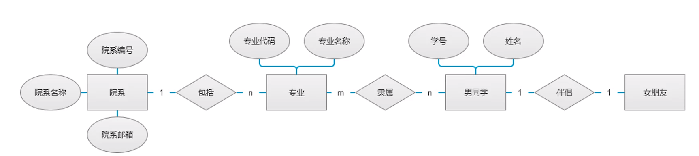

实体关系模型（ER图）
E-R模型在将现实世界中事实的含义和相互关联映射到概念模式方面非常有用，因此，许多数据库设计工具都利用了E-R模型的概念。E-R模型所采用的三个主要概念是：实体集、关系集和属性。
实体：实体是世界中可以区别于其他对象的“事件”或者“物体”，例如，学校里的每个学生、学生选修的每门课程等都是一个实体。属性：属性是实体集中每个成员具有的描述性性质。例如，学生的姓名，学号等。实体集：实体集就是就有相同类型及属性的实体集合，比如，学校里的所有学生，学生选修的所有课程等。关系：关系是多个实体间的相互关联。例如，小明选修语文课程。关系集：关系集是同类关系的集合。例如，所用学生选修课程的集合。
矩形框——研究对象即实体
菱形框——表示关心——框中计入联系名
椭圆形框：对象的组成部分——实体的属性

矩形与矩形之间要有菱形间隔——实体与实体之间要有联系类型
椭圆与椭圆之间不能连线，椭圆可以连接矩形和菱形——实体包含属性，联系包含分支解释
1:1 读作一对一，夫妻双方的男生和女生
1:n 读作一对多，表示1个实体关联多个实体的关系，一个手机只属于一个人，但一个人可以有多部手机，代表一的一方在菱形的临近出设置为1，代表多的一方在菱形出设置为n
n: m 读作多对多，表示多个实体关联多个实体
其中，（学号，姓名，年龄，性别）为学生的属性，（成绩）为选修关系的属性，（课程号，课程名，学分）为课程的属性。学生和课程之间的关系是多对多，即一个学生可以选择多门课程，一门课程可以被多个学生选修。
工具：
VISIO
亿图ProcessOn
关系表设计
关系数据库设计的目的是为了生成一组关系模式，使我们能够既不必存储不必要的冗余信息，又能方便地获取信息。为了是我们方便的达到这个目的，范式设计应运而生。
第一范式：
第二范式：
第三范式：
当我们不能同时满足以下三个设计目标：
- BCNF。
- 无损连接。
- 保持函数依赖。
我们可以放弃BCNF而接受相对较弱的第三范式（3NF）。因为3NF总能找到无损连接并保持依赖的分解
每个BCNF都属于第三范式；
BCNF
如果对F+中所有形如 α→β 的函数依赖，其中 α⊆R 且 β⊆R，下面的定义至少有一个成立：
- α→β 是平凡函数依赖（即 β ⊂ α）。（一般来说，平凡函数依赖并没有讨论意义，讨论的都是非平凡函数依赖，即 β ∉⊂ α 的情况）
- α 是模式R的超码。
字符集选择
在能够完全满足应用当下和未来几年发展的前提下，尽量使用小的字符集。应为更小的字符集意味着能够节省空间、减少网络传输字节数，同时由于存储空间小间接的提升了系统的性能。
不同的数据库有不同的字符集应用级别，分别为服务器级别、库级别、表级别、字段级别，通常推荐使用库级别或者表级别。因为库级别或者表级别在保有灵活性的同时，兼顾数据间字符集的统一，这可以给开发省去很多处理字符集的麻烦。
数据类型的选择
1：固定长度和可变长度：
固定长度会空格补全
2：浮点数与定点数
在MySQL中float、double是浮点数，decimal是定点数。
浮点数优势：在长度一定的情况下，浮点数能表示更大的数据范围。
浮点数缺点：精度问题。
主流关系型数据库对比
事务提交方式：
MYSQL 自动提交，Oracle 不自动提交
分页查询：
MYSQL 的 limit
Oracle 的 where rownum <=20
事务隔离级别：
MySQL 是 read commited 的隔离级别，
而 Oracle 是 repeatable read 的隔离级别
事务：
MySQL 在 innodb 存储引擎的行级锁的情况下才可支持事务，而 Oracle 则完全支持事务
持久性：
MySQL 是在数据库更新或者重启，则会丢失数据，Oracle 把提交的 sql 操作线写入了在线联机日志文件中，保持到了磁盘上，可以随时恢复。
并发性：
MySQL 以表级锁为主，对资源锁定的粒度很大，如果一个 session 对一个表加锁时间过长，会让其他 session 无法更新此表中的数据。
虽然 InnoDB 引擎的表可以用行级锁，但这个行级锁的机制依赖于表的索引，如果表没有索引，或者 sql 语句没有使用索引，那么仍然使用表级锁。
Oracle 使用行级锁，对资源锁定的粒度要小很多，只是锁定 sql 需要的资源，并且加锁是在数据库中的数据行上，不依赖与索引。所以 Oracle 对并发性的支持要好很多。
复制：
MySQL:复制服务器配置简单，但主库出问题时，丛库有可能丢失一定的数据。且需要手工切换丛库到主库。
Oracle:既有推或拉式的传统数据复制，也有 dataguard 的双机或多机容灾机制，主库出现问题是，可以自动切换备库到主库，但配置管理较复杂。
主键：
MYSQL 支持主键自增
Oracle 不知此主键自增。